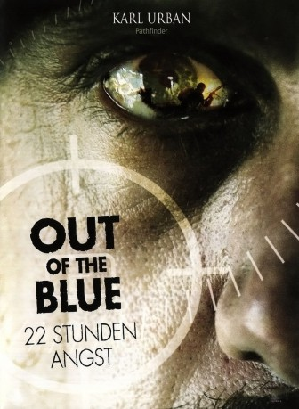

#5345 Out of the Blue - 22 Stunden Angst
 
 IMDB-Wertung: 7.2 / 10
IMDB-Wertung: 7.2 / 10  Metascore: 0
Metascore: 0 
Neuseeländischer Thriller über den Amokläufer David Gray, der am 13. November 1990 in einer neuseeländischen Kleinstadt 13 Menschen erschoss - angeblich, weil die Nachbarskinder ihn auf seinem Grundstück belästigten.
Jahr: 2006
Dauer: 103 Minuten
FSK: 16
Land: Neuseeland Studio: Capelight PicturesTonspuren: DD2.0 - ,
Untertitel:
Auflösung: 1080p (1920x1040) Größe: 9287 MB
Genre: Drama, Krimi
Regisseur: Robert Sarkies
Drehbuch: Man-Hee Lee
Soundtrack:
Darsteller:
 Karl Urban als Nick Harvey
Karl Urban als Nick Harvey Matthew Sunderland als David Gray
Matthew Sunderland als David Gray- Tandi Wright als Julie-Anne Bryson
- Paul Glover als Paul Knox
 William Kircher als Stu Guthrie
William Kircher als Stu Guthrie- Richard Knowles als Rene Aarsen
- Ryan O'Kane als Darren Buist
 Bruce Phillips als Chris Cole
Bruce Phillips als Chris Cole- Michael Whalley als Darren Gibbs
- Lois Lawn als Helen Dickson
- Simon Ferry als Garry Holden
- Georgia Fabish als Chiquita Holden
- Fayth Rasmussen als Stacey Percy
- Timothy Bartlett als Jimmy Dickson
- Tony Bishop als Ross Percy
- Baxter Cannell als Dion Percy
- Murray Davidson als Bank Manager
- Dave Dudfield als AOS / ATS Officer
- Nick Duval-Smith als Brian Wilson
- Natalie Ellis als Dorothy Crimp
- Jemima Fallows als Babe
- Fatu Ioane als Aleki Tali
- Brenda Kendall als Garry Holden's Mother
- Thomas Lee-Batley als Leo Wilson
- Finn Liddell als Jordan Harvey
- Stuart Mathieson als Vic Crimp
- Dra McKay als Heather Dickson
- Steven Moore als Ron Braithwaite
- Mark Neilson als BBQ Mate
- Patrick Paynter als Tim Jamieson
- Vaughan Slinn als Russell Anderson
- Phoebe Smith als Jenny Austin
- Vanessa Stacey als Vanessa Percy
- Claire Waldron als Fiona Harvey
- Kerrie Waterworth als Bank Teller
- Jacinta Wawatai als Rewa Bryson
- Richard West als Warren Wilson
- Danaka Wheeler als Jasmine Holden
- Ashley Wilson als Gunshop Owner
Datei: X:\2006(N-Z)\Out of the Blue - 22 Stunden Angst (2006, FSK16, 1920x1040).mkv seit 17.01.2017
Festplatte: HD 2005(G-Z)-2006(A-Z)
 Es gibt insgesamt 62 Filme in der Gruppe '2006(N-Z)'
Es gibt insgesamt 62 Filme in der Gruppe '2006(N-Z)'